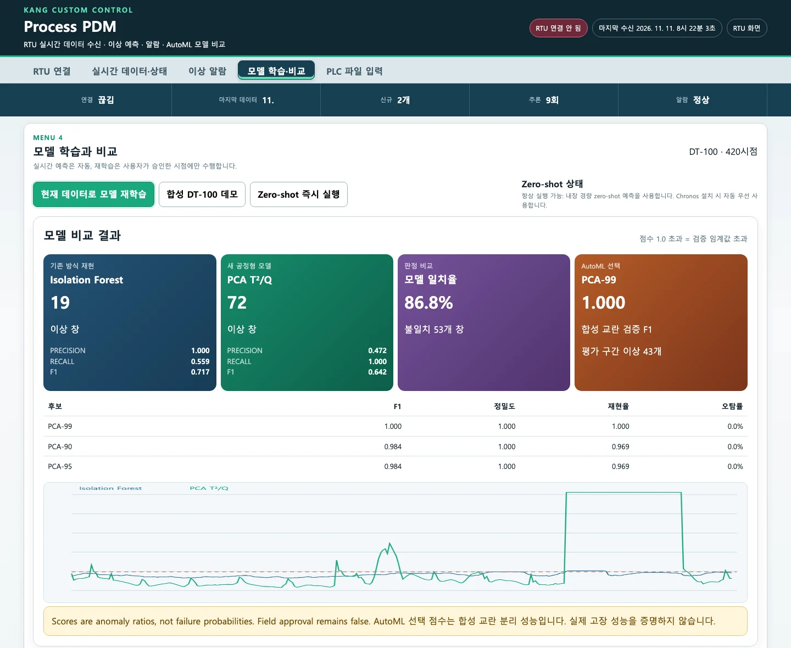
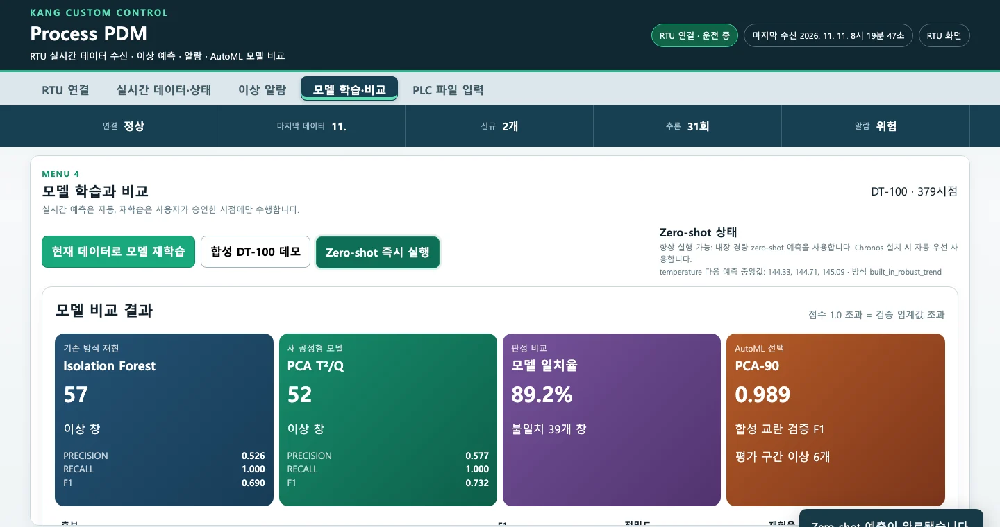

AutoML은 후보 여섯 개를 「정상 검증 데이터에 일부러 낸 흠집을 얼마나 잘 가르는가」로 비교합니다. 이번 실행에서는 매번 PCA가 이겼습니다. 다만 AutoML이 고른 모델이 알람을 내지는 않습니다. 알람은 늘 기존 방식과 PCA-95가 냅니다. 합성 DT-100 데모로 정답 라벨이 있을 때의 성적을 보고, Zero-shot 버튼이 실제로 무엇을 하는지도 확인합니다.
AutoML은 무엇을 비교하나#
후보는 여섯 개입니다. 학습·검증·평가 구간은 2장과 같습니다.
| 후보 | 설정 | 「복잡도」(동점일 때 단순한 쪽 우선) |
|---|---|---|
| IsolationForest-100 | 나무 100그루, 표본 자동 | 100 |
| IsolationForest-200 | 나무 200그루, 표본 80% | 200 |
| IsolationForest-300 | 나무 300그루, 표본 60% | 300 |
| PCA-90 / 95 / 99 | 설명 분산 90·95·99%까지 주성분 사용 | 주성분 수 |
기존 방식 재현 모델과 달리 AutoML의 Isolation Forest 후보는 일곱 채널 특징 35개를 모두 씁니다.
고장 기록이 없으므로 정답 라벨 대신 합성 교란을 씁니다.
- 정상 검증 구간의 창(특징 35개)을 그대로 「깨끗한 쪽」으로 둡니다.
- 같은 창을 복사해 행마다 특징 두 개를 흔듭니다. 하나는 학습 구간 표준편차의 4배만큼, 다른 하나는 반대 방향으로 2.5배만큼 옮깁니다. 이것이 「흠집 낸 쪽」입니다. 어느 특징을 흔들지는 행 번호로 정해서 매번 같습니다.
- 각 후보가 자신의 임계값으로 두 쪽을 얼마나 잘 구분하는지 정밀도·재현율·F1과 깨끗한 쪽의 오탐률로 측정합니다.
- F1이 높은 순, 같으면 오탐률이 낮은 순, 그다음에는 단순한 순으로 순위를 매겨 1위를 고릅니다.
- 1위 후보로 평가 구간을 판정해 「평가 구간 이상 N개」를 보여 줍니다. 평가 구간은 후보를 고르는 데 쓰지 않습니다.
이번 실행의 결과는 다음과 같습니다.
| 데이터 | 1위 | F1 | 나머지 |
|---|---|---|---|
| RTU에 연결한 직후(이력 320시점, 재생) | PCA-90 | 0.989 | PCA-95 0.966, PCA-99 0.953, IF-300 0.269, IF-100 0.163, IF-200 0.125 |
| 합성 DT-100 데모(420시점) | PCA-99 | 1.000 | PCA-90·95 0.984, IF-200 0.088, IF-100·300 0.060 |
| 깨끗한 PLC_DATA 파일(1,300시점, 6장) | PCA-95 | 0.986 | |
| 이상을 먼저 120초 넣고 연결(재생, 5장) | IF-300 | 0.110 | 모든 후보가 낮음 |
PCA가 계속 좋은 성적을 내는 데는 이유가 있습니다. 흠집은 「특징 하나가 혼자 크게 움직이는」 모양입니다. 이는 PCA의 Q(관계로 설명되지 않는 나머지)가 가장 잘 포착하는 형태입니다. Isolation Forest는 특징 35개 가운데 한두 개만 움직인 창을 따로 떼어 내기 어렵습니다. 그래서 AutoML 1위는 「이 흠집을 잘 가르는 모델」이지, 현장 고장을 잘 잡는 모델이라는 뜻이 아닙니다. 화면 아래의 경고문도 같은 말을 합니다.
AutoML이 고른 모델로 알람을 내지 않습니다
「이상 알람」과 「이상 창」 카드는 언제나 기존 방식(IF 100그루, 온도·압력)과 PCA-95로 계산합니다. AutoML 카드는 「이 데이터라면 이 후보가 낫다」는 보고일 뿐입니다. 1위가 PCA-90이나 IsolationForest-300이어도 알람 모델은 바뀌지 않습니다. 배포본 문서도 AutoML을 「후보 축소와 초기 설정 자동화를 위한 기능」이라고 설명합니다. AutoML은 연결할 때와 재학습할 때만 계산합니다. 2초마다 화면을 갱신할 때는 그 결과를 그대로 보여 줍니다.
합성 DT-100 데모로 정답과 비교하기#
「합성 DT-100 데모」는 RTU 없이 정답 라벨이 있는 데이터를 불러옵니다. 1분 간격 420시점(7시간)이고, 전체의 82~90% 구간(344~377번째, 34시점)에 밸브 고착이 들어 있습니다. 밸브가 82%로 고정되고, 유량은 48%로 줄고, 압력은 +145 mmHg, 온도는 +9 °C, 레벨은 +7%p 오릅니다. 밸브 이외의 값은 정상 파형에 변화가 더해지므로 멈추지는 않습니다.
-
「모델 학습·비교」에서 합성 DT-100 데모를 누릅니다. RTU 연결이 끊기고(두 데이터가 섞이지 않게) 「DT-100 · 420시점」이 됩니다.
-
현재 데이터로 모델 재학습을 누릅니다. 이번에는 라벨이 있어 정밀도·재현율·F1이 나옵니다.

합성 DT-100 데모 결과. Isolation Forest 이상 창 19(정밀도 1.000, 재현율 0.559), PCA T²/Q 72(정밀도 0.472, 재현율 1.000), 일치율 86.8%, AutoML PCA-99 F1 1.000. 아래 그래프에서 PCA 점수가 밸브 고착 구간에서 위로 붙는다
| 이상 창 | 정밀도 | 재현율 | F1 | 어디를 잡았나 | |
|---|---|---|---|---|---|
| 기존 방식(IF) | 19 | 1.000 | 0.559 | 0.717 | 고착이 시작된 앞 19개 창만. 고착이 이어지는 뒤쪽 15개 창은 놓침 |
| PCA T²/Q | 72 | 0.472 | 1.000 | 0.642 | 고착 34개 창 전부 + 복귀 뒤 꼬리 21개 + 정상 구간 17개 |
같은 데이터에서도 두 모델의 성적은 상반됩니다. 기존 방식은 틀린 경보가 없지만 고착의 절반을 놓쳤습니다. 3장에서 본 대로 변화가 창 안에 있을 때 반응하기 때문입니다. PCA는 고착을 모두 잡았지만, 정밀도는 절반에 못 미칩니다. 다만 라벨은 고착이 있던 원시 시점에만 붙고, 복귀 뒤 19~21개 창은 창 안에 고착이 남아 있어도 「정상」으로 채점됩니다. 그러니 PCA의 정밀도는 실제보다 낮게 나옵니다. 꼬리를 빼면 틀린 경보는 정상 구간의 17개 창입니다.
F1 하나로 고르면 생기는 일
F1만 보면 기존 방식(0.717)이 PCA(0.642)보다 낫습니다. 하지만 공정 안전 쪽에서는 「고착이 이어지는 동안 알람이 꺼지는」 모델은 쓰기 어렵습니다. 반대로 헛알람이 많으면 운전원이 알람을 무시하게 됩니다. 어느 쪽 실수가 더 큰 비용을 초래하는지는 현장에서 판단해야 합니다. 그래서 7장 과제에 「놓친 시간」과 「하루 헛알람 수」를 따로 재는 항목을 넣었습니다.
Zero-shot 버튼이 하는 일#
「Zero-shot 즉시 실행」을 누르면 버튼 오른쪽 아래에 한 줄이 나옵니다.
temperature 다음 예측 중앙값: 144.33, 144.71, 145.09 · 방식 built_in_robust_trend

실제로 확인한 동작은 이렇습니다.
| 항목 | 동작 |
|---|---|
| 대상 채널 | 첫 채널(온도) 하나만. 채널을 고르는 칸이 없습니다 |
| 예측 길이 | 10시점. 화면에는 앞 3개 중앙값만 나옵니다 |
| 방식 | Chronos(chronos-forecasting, torch)가 설치되어 있고 모델 가중치가 이미 내 컴퓨터에 있으면 Chronos-Bolt Small을 씁니다. 아니면 내장 추세 예측(built_in_robust_trend)을 씁니다 |
| 내장 추세 예측 | 최근 60개 값에 직선을 맞춰 앞으로 늘리고, 이웃한 값들의 차이가 흩어진 정도로 10%~90% 범위를 만듭니다. 학습된 모델이 아닙니다 |
| 가중치 내려받기 | 화면은 항상 「내려받지 않음」으로 요청합니다. 처음 쓰는 Chronos 가중치를 화면에서 받을 방법은 없습니다 |
| 알람과의 관계 | 없습니다. 예측과 실제값의 차이(이탈 점수)를 계산하는 기능도 아직 없습니다 |
이번 실행에서는 Chronos를 설치하지 않았으므로 내장 추세 예측이 나왔습니다. 위 결과는 수동 이상(온도 145 °C) 직후에 누른 것이라, 직선이 이상값 쪽으로 이어져 144~145 °C를 예측했습니다. 교육 자료(PPT 16쪽)의 「실제값 비교 → 이탈 점수」 흐름은 아직 화면에 없습니다.
확인 문제#
-
AutoML 카드가 IsolationForest-300을 1위로 보여 줍니다. 이제부터 알람은 IsolationForest-300이 내나요?
정답
아닙니다. 알람과 「이상 창」 카드는 언제나 기존 방식(IF 100그루, 온도·압력 특징)과 PCA-95로 계산합니다. AutoML 카드는 비교 결과를 보고할 뿐입니다. 이번 실험에서 IsolationForest-300이 1위가 된 것은 학습 데이터에 이상이 섞여 모든 후보의 성적이 낮을 때(F1 0.110)뿐이었습니다. 5장을 보세요.
-
합성 데모에서 PCA의 정밀도가 0.472입니다. PCA가 이상이라고 한 창의 절반 이상이 정말 정상이었나요?
정답
전부 그렇지는 않습니다. 72개 가운데 34개는 고착 구간, 21개는 고착이 끝난 직후의 창입니다. 이 21개 창은 20시점 창 안에 아직 고착 값이 남아 있습니다. 라벨이 원시 시점 기준이라 이 창들이 「틀림」으로 채점됩니다. 실제로 정상 운전 중에 알람이 울린 창은 17개입니다. 성능을 잴 때는 라벨을 창 기준으로 맞추거나, 「복귀 뒤 몇 초까지는 채점하지 않는다」 같은 규칙을 정해야 합니다.
-
「Zero-shot 즉시 실행」을 눌렀더니 온도의 다음 값이 145 °C 근처로 나왔습니다. 「앞으로 온도가 145 °C가 될 것」이라고 보고해도 되나요?
정답
안 됩니다. Chronos가 없을 때는 최근 60개 값에 직선을 맞춰 늘린 결과입니다. 최근 값에 수동 이상(145 °C)이 들어 있으니 그쪽으로 이어졌을 뿐입니다. 이 예측은 알람에 쓰이지 않습니다. 배포본도 「보조 근거」로만 쓰라고 합니다.